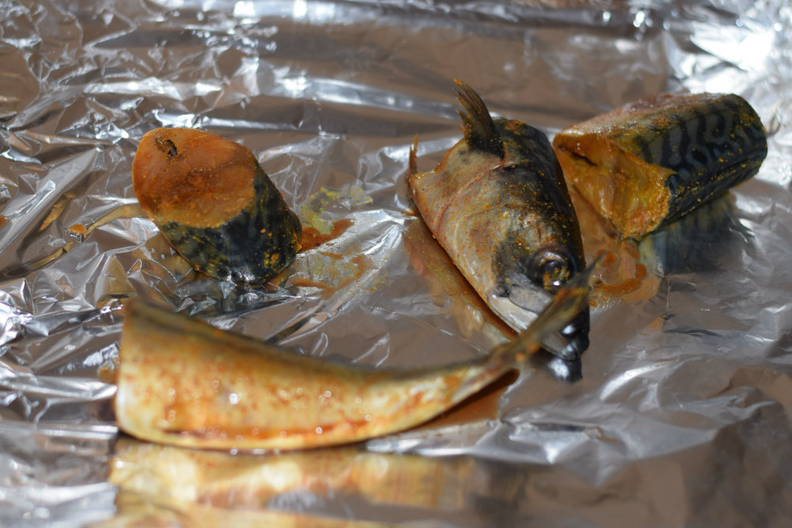
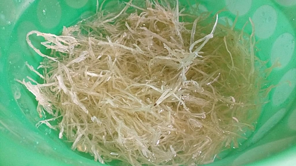
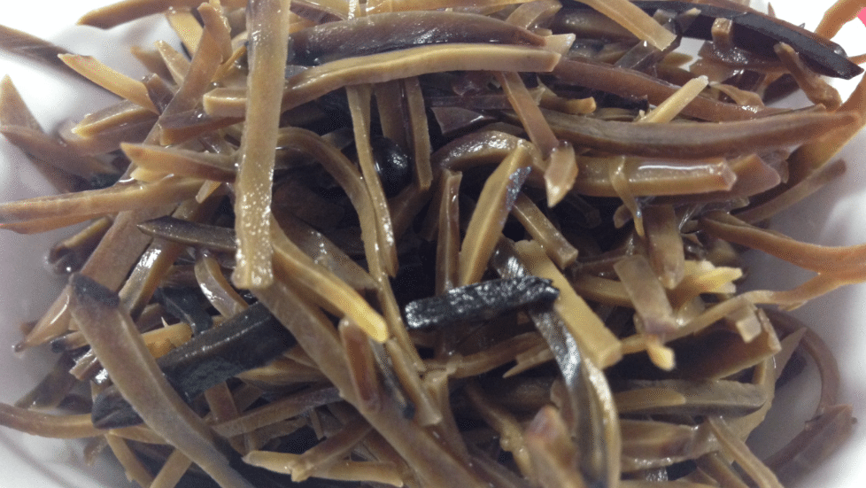
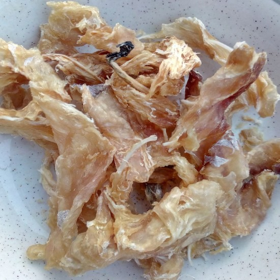
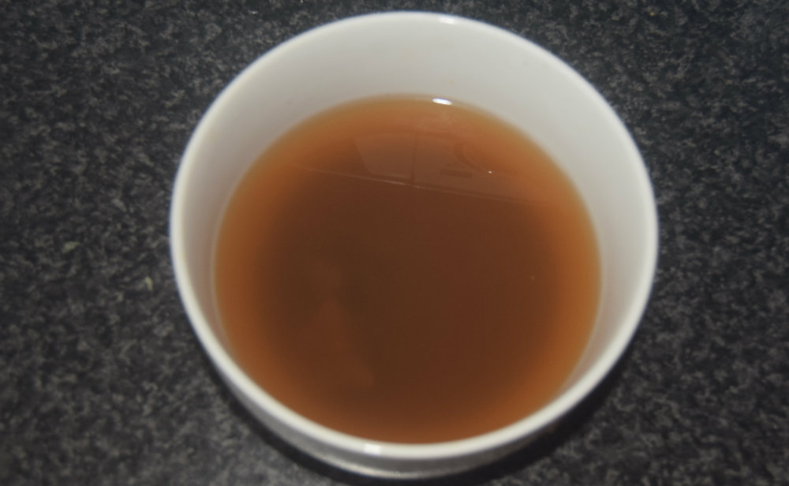
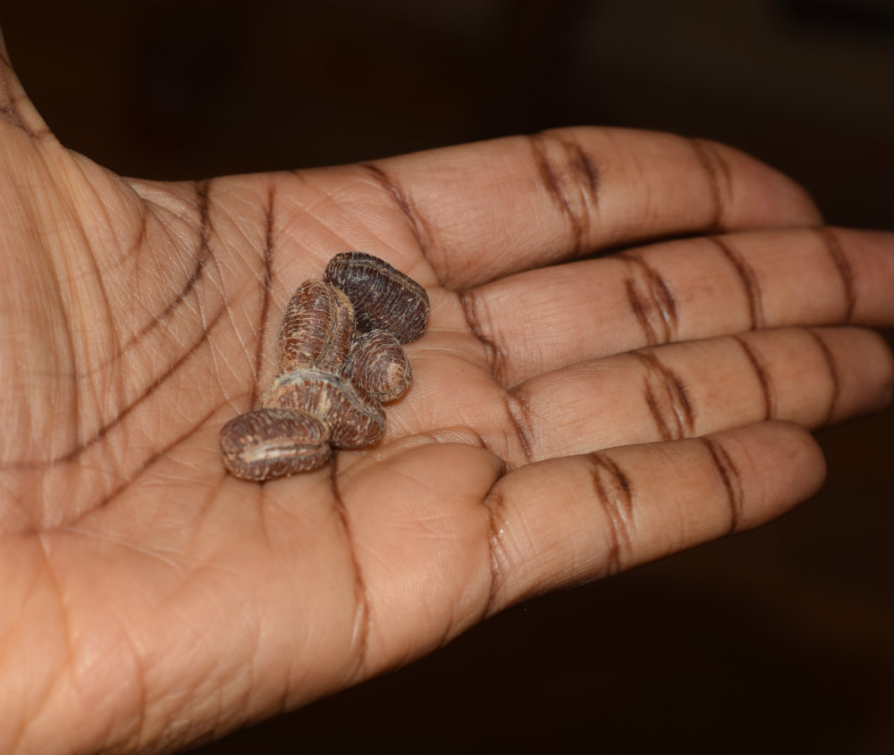
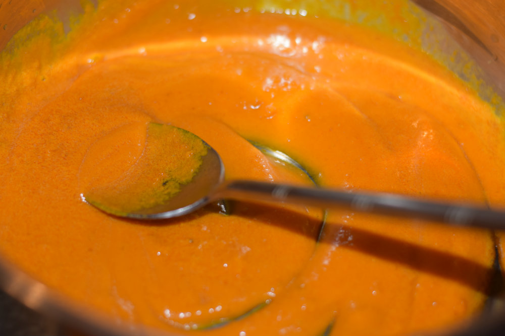
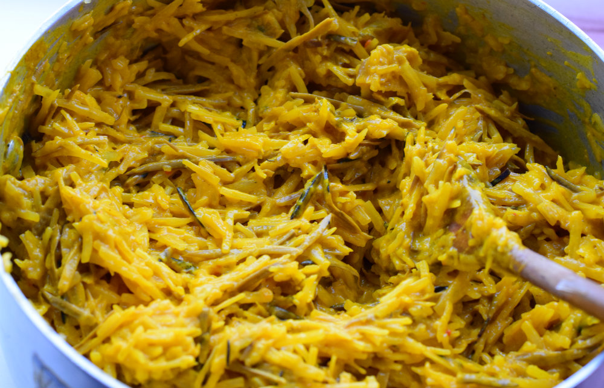
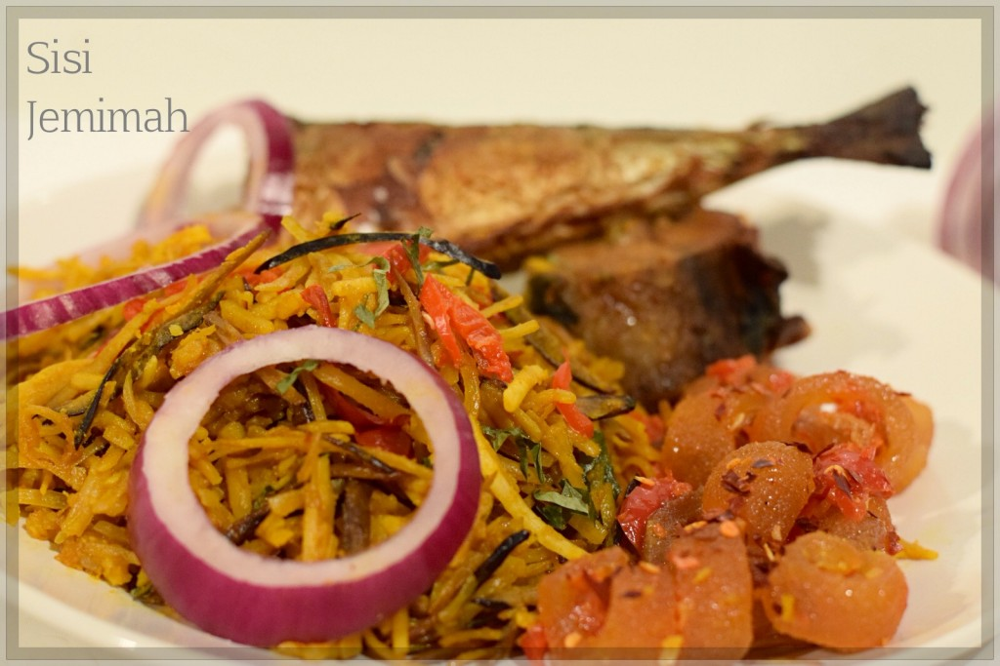

Abacha and Ugba also known as African salad is a Cassava based dish from the Igbo tribe of Eastern Nigeria. Abacha is simply dried shredded Cassava while Ugba on the other hand is fermented African oil bean seed.
Abacha and ugba with fried fish is one of the most well liked of recent trending foods on earth. It’s simple, it is quick, it tastes yummy. It is enjoyed by millions daily.
Ingredients
The quantities of the ingredients specified are relative and not standards
Abacha and Ugba is NOT a hob/stove cooked dish, so don’t be tempted to cook it with heat.
600g Abacha
250g Ugba or Ukpaka
100g Palm Oil
1 Teaspoon Edible Potash
1 Fresh Fish (Mackerel/Titus)
2-3 Medium Stockfish/ Okporoko (Optional)
1-2 Scotch Bonnet or 2 Tablespooon Ground pepper
1 Red Onion
4-6 Garden Eggs (Optional)
6-8 Utazi Leaves
2 Tablespoon Crayfish Powder
5 Calabash Nutmeg Seeds (Ehuru)
1/2 Teaspoon Ogiri
Knorr Cubes or any Boullion Cubes
Preparations:
Step 1
Firstly, clean and gut your fish, then marinate with salt, curry, bouillon cube or seasoning. Leave to marinate in your fridge or a cool place for at least 30 minutes….

Step 2
Then grill or fry. I prefer grilling, this was grilled for 45 minutes on 220 degrees…

Step 3
Soak the Abacha in cold water till soft, this should take roughly 10 minutes, leave to drain in a colander…

Step 4
Rinse the Ugba with warm water to rid it of dirt…

Step 5
Boil the stockfish with salt and seasoning till soft…

Step 6
Dissolve the Potash in 1 cup of water…
Step 7
Blend the scotch bonnet, 1/2 of the onion, crayfish and ground Ehuru till smooth and set aside….

Step 8
Roast the Calabash nutmeg, peel and grind in a mortar or mill. I’m using pre-ground Ehuru but this is what Calabash nutmeg looks like in case you’re wondering…

Step 9
Pour the palm oil into a bowl or saucepan, gradually add the potash mixture into the palm oil, mix thoroughly, you’ll notice the palm oil will begin to thicken and the colour will turn yellowy. Be careful not to add too much also be careful not to add the residue at the bottom of the bowl…
Now, add the pepper mix into the palm oil…
Step 10
Now, add the shredded stockfish, Ogiri, then the Ugba, stir and combine…
Step 11
Then add the Abacha, stir and combine….

Step 12
And it’s ready.
You can mix in your chopped Utazi leaves at this time if you wish to. I prefer to just garnish with it. Be careful not to add too much Utazi though, it’s quite bitter and will affect the taste of your Abacha if added in excess.

Step 13
Garnish with Onion rings, Garden Eggs, Utazi leaves and the Grilled/Fried Fish…

.jpg)